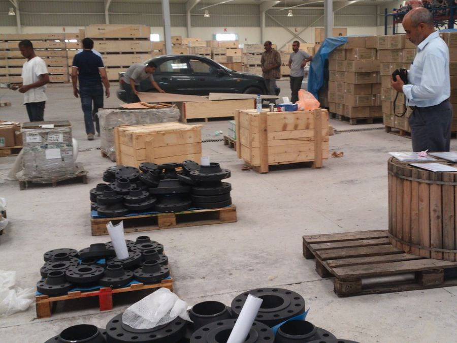
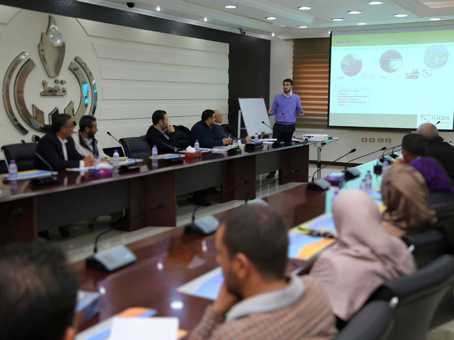
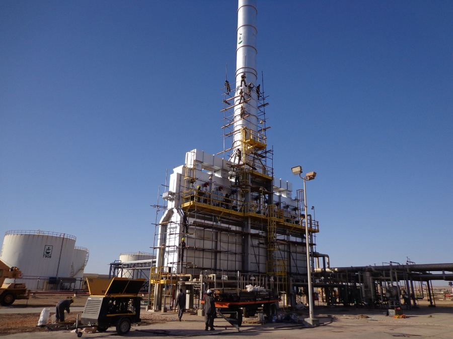
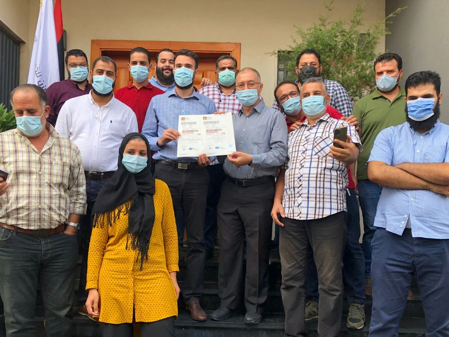
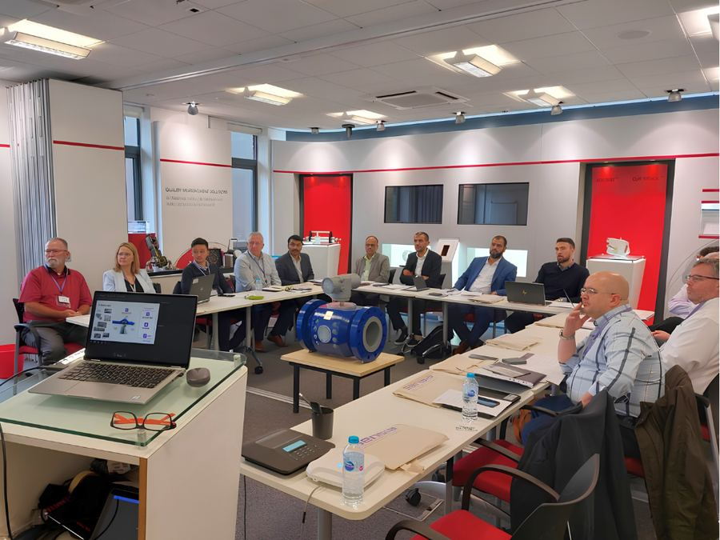
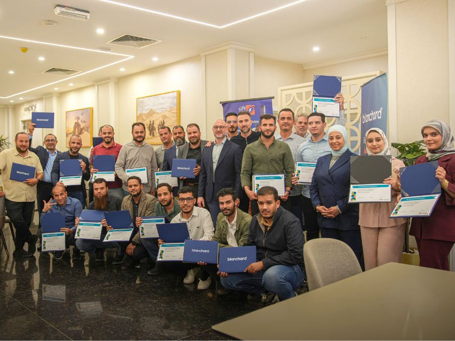

2007–2011
Market Entry & Foundation
Wazen entered Libya’s energy sector with a focus on supply chain logistics, trading, and procurement support. By prioritizing operational reliability, we established early-stage relationships with local operators and international manufacturers. This period laid the operational groundwork for Wazen's future expansion. Through mastering the strict procurement requirements and industry standards of major operators, we built the market credibility necessary to transition from a supply-chain provider into a comprehensive technical services platform.

2012–2014
Platform Building & Infrastructure Expansion
Driven by our understanding of operator needs, Wazen executed a key strategic shift from a supply-chain business into a fully integrated energy services company. We aggressively expanded our footprint into independent engineering, project execution, and specialized technical services.
This era was marked by significant physical and organizational investment, including the development of Dahra Camp and the establishment of our first major partnership with Galfar. By initiating structured workflows, information visibility, and early ERP systems, Wazen firmly established the physical field presence and project execution capabilities that define our operations today.

2014–2017
Strategic Resilience & Continuous Delivery
During one of the most challenging economic and political periods in Libya’s recent history, Wazen chose to adapt and invest rather than retreat. We successfully navigated severe market contractions, banking constraints, and supply-chain disruptions through disciplined liquidity management and strategic organizational restructuring.
Crucially, we preserved our core engineering capability and retained our key personnel. By maintaining active operations and continuously supporting major clients—including Wintershall and AGOCO—through extreme market volatility, Wazen forged an unshakeable reputation for resilience and uncompromising execution.

2017–2020
Rigorous Professionalisation & Global Standards
As operations scaled, Wazen transformed its internal framework from a founder-led business into a highly structured, process-led enterprise. We formalized our corporate governance, departmental accountability, and performance management structures.
This era saw the aggressive expansion of our internal operational standards, integrating formal HSE, Quality, Planning, and Asset Management functions. By embedding ISO management systems across our operations, Wazen built the disciplined corporate backbone required to safely execute projects alongside tier-one global organizations.

2020–2025
Advanced Capability & Technical Integration
Building on our corporate foundation, Wazen expanded deeply into higher-value technical services to support the modernization of Libya’s critical infrastructure. We developed specialist execution capabilities spanning automation, instrumentation, metering, rotating equipment, and dedicated EPC support.
This technical evolution was anchored by strategic global partnerships with industry heavyweights including Sensia Global, Rockwell Automation, SLB, and Swagelok. Through process integration and advanced project controls, Wazen positioned itself as the definitive local integrator for complex international technology.

2025–Present
Institutional Scale & Long-Term Delivery
Today, Wazen operates not as a collection of departments, but as a scalable, highly integrated corporate institution. We have deployed an advanced Project Delivery operating model supported by centralized PMO functions, sophisticated ERP-enabled governance, and rigorous competency frameworks. With our workforce organized efficiently across Project Delivery, Supply Chain, Shared Services, and Finance, Wazen is engineered for sustainable, long-term execution. We are fully equipped to deliver complex, multi-year scopes consistently while retaining the critical knowledge necessary to drive the future of Libya’s energy sector.
